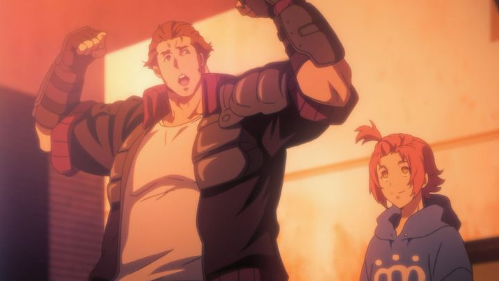

"Garo - Vanishing Line" is part of a larger franchise. If you weren't paying attention, you wouldn't know it, as the GARO stories, spanning across anime and live-action shows, are each independent and set in alternate universes. Therefore, you could pick one at random to try it. That's what I did, skipping over "Garo - The Animation" (which appears to be in a fantasy medival Spain) and "Garo - Crimson Moon" (in a fantasy Feudal Japan), and jumping into "Vanishing Line," set in a stylized modern-day USA. The reasons I was intrigued with this one was the setting, style, and tone. It specifically recalls the edgy action anime we got from the mid-2000's, with muscular heroes and bold shadows. Think vaguely of shows like "Speed Grapher" and "The Book of Bantorra," or "Gantz" or "Samurai Champloo" or "Darker Than Black." All while keeping the same general premise of the "Garo" franchise: people make a deal with the devil for one reason or another, turning into "Horrors," monsters with an insatiable hunger for human flesh. In the shadows are the Makai Knights, working in secret to hunt these Horrors and keep the peace. It's a super-hero show, or the "tokusatsu" genre as it's known in Japn. It reminded me of the "Power Rangers," or for a deeper cut, "Mystic Knights of Tir Na Nog." In this modern town of Russell City, the lead hero is Sword, an all-brawn Makai Knight with a talking skull-ring, weaponizing his sword and motorcycle, and transforming into a golden-armor Knight when required. He's effective, but also kind-of an idiot, so it's a good thing there are other Knights (also known as Makai Alchemists) on the job that are a bit more understated, like the sniper Luke and the femme fatale Gina. Along the way, the young street-smart orphan Sophie gets caught up in their adventures, hoping that Sword and company can be the key to finding her missing brother. Also, there's the mystery of El Dorado, which seems to be the key to what everyone is after, even though no one knows what it is. ... and a lot like anime from the 2000's, it turns into a monster-of-the-week series, focusing on a new corrupt villain-turned-Horror in the seedy underbelly of the city, while offering crumbs of character background and plot development to keep viewers curious. This episodic structure goes on for a while, until there's a big plot development about one-third the way through... then it goes back to monster-of-the-week for another third, before bringing everything to a dramatic showdown in the last arc. In fact, this entire structure from start to end is similar to what most 2000's anime followed, and was a little off-putting to watch in a new series a decade later. The plot's format isn't a bad thing, if the individual episodes were compelling on their own. For "Vanishing Line," each episode is... fine. Each villain has different backgrounds, some sympathetic and some not, and each has different twists on the horror-element (if anything, "Vanishing Line" would be in the horror-genre, followed by action). But in those first several episodes, the structure and setting dragged on a little, and the stories weren't as compelling as the show thought it was, and weren't as effective as other shows it tries to emulate. Thankfully, after that big plot hook several episodes in, Sophie's character suddenly becomes important (if still somewhat childish and whiny next to the 7-foot heroes she stands besides), and the story takes a road trip out of the city and across America. With the extra context and world-building built up by then, I had more reason to care, and started to enjoy the new monster stories they came across. We also get a loving rendition of modern rural America, something I don't recall seeing in any other Japanese anime. And the plot takes some satisfying turns towards the end, providing a satisfying and dramatic conclusion in an epic battle for the world. In short, the story's good, although it takes a while to get there.  While I grew to like it eventually, my reaction was lukewarm at first, partly because the show isn't nearly as edgy as it thinks it is. Rather, it's "cool" instead of "edgy." Violence and scary monster designs get more explicit later in the series, but at first felt rather tame. As a show primarily featuring adults, I found the fanservice to be especially tame; the worst it gets is Sword's recurring reaction to women with large breasts, clapping his hands together to say thanks. A joke that gets old, by the way. The way it is, I think it's perfectly appropriate for 13-year-old boys, who might go into this thinking it's the coolest thing they've ever seen, and perhaps the most violent, only because they haven't watched enough anime yet.But there is a certain nostalgic charm, with a few stylistic inspirations. I credit the strengths (and weaknesses) to first-time South Korean director Sunghoo Park, who has since continued on to be a prominant leader in Japanese anime. While the show is still very much Japanese (by anime studio MAPPA), I feel like some of the character designs (and in particular, the abstract animation sequences, such as with the devil transforming people into demons) are inspired in part by Manhwa, the Korean equivalent of Japanese manga. While most anime and manga fans will swear that anything outside of Japan isn't good enough, I've found that manga varies greatly in quality, typically leaning towards bad to mediocre. Korean manhwa on the other hand, not bound by tradition and leveraging digital art and crazier styles, is much more interesting. This is to say that "Vanishing Line" at least looks good. Or rather, the promotional and concept art, on display during mid-episode title screens, looks great. In animation, it's a mixed bag, because the show LOOKS like it was animated in 2006, which probably isn't a compliment for something made in 2017. Talking scenes are rather static, and there are more than a few animation errors I caught when looking closely. Action scenes look better, but mostly because of the choreography and what's happening (like when the hero punches a bullet back at the shooter, or when he drives his motorcycle up a building) rather than how it was shot and animated. Frankly, I expected better from MAPPA, and for a show like this, not going all out feels like a missed opportunity. One of the strongest elements of "Vanishing Line" is the kicking soundtrack, pumped up by good use of its theme song. Funimation's English dub is good, but standard output from them. "Garo - Vanishing Line" proves itself to be a decent action-horror series, inspired by anime from yester-year. It isn't as good as the best from that era, but I can imagine this being a gateway to a young anime fan to discovering those roots. And if you commit to it, it might succeed in convincing you that it's cool as heck.
- "Ani" More reviews can be found at : https://2danicritic.github.io/ Previous review: review_Gargantia_on_the_Verdurous_Planet Next review: review_Genius_Party,_Genius_Party_Beyond